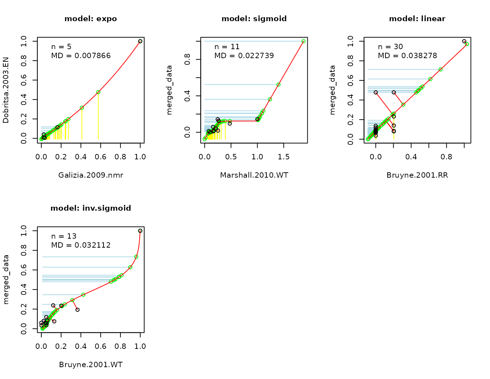

The Database of Odor Responses - DoOR functions package
Daniel Münch
2024-03-19
Source:vignettes/DoOR.functions_main.Rmd
DoOR.functions_main.RmdDoOR consists of two R packages and both are needed for DoOR to work properly. One package, DoOR.data contains all the Drosophila odor responses we gathered from labs around the world or recorded ourselves. The other package DoOR.functions contains the DoOR framework for integrating heterogeneous data sets as well as analysis tools and functions for visualization.
In this vignette we describe how to build, modify and update DoOR and introduce some helper functions. There are two other vignettes explaining the plotting functions and the analysis tools in detail. ##
Loading DoOR
The first step after starting R is to attach both packages and to load the response data:
##
## Welcome to DoOR.data
## Version: 2.0.1
## Released: 2017-03-07
##
## Please use load_door_data() to load all data into your workspace now.##
## Welcome to DoOR.functions
## Version: 2.0.2
## Released:
##
## Please note that all function names have been changed to 'snake_case'
## for consistency.
##
## Old 'camelCase' function names will stop working in one of the next
## versions.
load_door_data(nointeraction = TRUE)load_door_data() attaches the data from DoOR.data.
Modifying, building and updating DoOR
DoOR comes with all the original data sets as well as with a pre-computed version of the consensus matrix door_response_matrix where all data was integrated using the DoOR merging algorithms (see paper for details on how the algorithm works). The values in door_response_matrix are globally normalized with values scaled [0,1]. door_response_matrix_non_normalized is a version of the consensus data that is not globally normalized meaning that responses are scaled [0,1] within each responding unit (receptor, sensory neuron, glomerulus…).
Importing new data with import_new_data()
It is easy to add new response data to DoOR, we only have to take care to provide it in the right format:
- either a .csv or a .txt file with fields separated by colons or tabs (see
?read.tablefor detailed specifications). * the filename corresponds to the later name of the data set * if we add e.g. recordings obtained with different methods, these should go into two data sets and thus into two different files that we import * e.g. “Hallem.2004.EN” and “Hallem.2004.WT” are the “empty neuron” and the “wildtype neuron” recordings from Elissa Hallem’s 2004 publication * the file needs at least two columns: 1. one column named “InChIKey” holding the InChIKey of the odorant 1. one column named after the responding unit the recording comes from (e.g. “Or22a”)
A minimal example file could look like this:
| InChIKey | Or22a | |
|---|---|---|
| 1 | SFR | 4 |
| 3 | VHUUQVKOLVNVRT-UHFFFAOYSA-N | 17 |
| 4 | KIDHWZJUCRJVML-UHFFFAOYSA-N | 16 |
| 5 | VHRGRCVQAFMJIZ-UHFFFAOYSA-N | 17 |
We can provide more chemical identifiers:
| Class | Name | InChIKey | CID | CAS | Or22a | |
|---|---|---|---|---|---|---|
| 1 | NA | sfr | SFR | SFR | SFR | 4 |
| 3 | amine | ammonium hydroxide | VHUUQVKOLVNVRT-UHFFFAOYSA-N | 14923 | 1336-21-6 | 17 |
| 4 | amine | putrescine | KIDHWZJUCRJVML-UHFFFAOYSA-N | 1045 | 110-60-1 | 16 |
| 5 | amine | cadaverine | VHRGRCVQAFMJIZ-UHFFFAOYSA-N | 273 | 462-94-2 | 17 |
Any of the following will be imported:
Class- e.g. “ester”
- the chemical class an odorant belongs to
Name- e.g. “isopentyl acetate”
InChIKey- e.g. “MLFHJEHSLIIPHL-UHFFFAOYSA-N” (details)
InChI- e.g. “InChI=1S/C7H14O2/c1-6(2)4-5-9-7(3)8/h6H,4-5H2,1-3H3” (details)
CAS- e.g. “123-92-2” (details)
CID- e.g. “31276” (details)
SMILES- e.g. “C(C(C)C)COC(=O)C” (details)
See ?import_new_data for more details. We can e.g. import data also based on CAS or CID instead of InChIKey.
Looking up InChIKeys If you do not know the InChIKeys of the odorants in
your data set, we recommend using the webchem package for automated lookup or doing it manually via http://cactus.nci.nih.gov/chemical/structure or any other chemical lookup service.
Building the complete data base with
create_door_database() Once we imported new data we can use create_door_database() in order to rebuild both response matrices. During the merge process some data sets might be excluded because either their overlap with other studies is too low or the fit against other studies is too bad; these studies will be recorded in door_excluded_data.
Updating parts of the data base with
update_door_database() If we imported new data only for a few receptors, we can update the data base with update_door_database(). There are two ways to update the data base:
Using the heuristic approach This is the faster way to perform a merge of
all data sets. All possible binary combinations of data sets will be merged using 10 different fitting functions on the odorants that were measured in both data sets. The two data sets yielding the “best merge” (i.e. lowest mean deviations of points from the fitted function) will be merged. The process of pairwise merges will be repeated with the “merged_data” against the remaining data sets until all of them are included:
update_door_database("Or92a", permutation = FALSE, plot = TRUE)## Not all datasets could be merged because they did not reach the
## criterion.## door_response_matrix_non_normalized has been updated for Or92a## door_response_matrix has been updated for Or92a## door_excluded_data has been updated for Or92a
Trying all permutations The more exhaustive way to update the data base is
to test all possible sequences of data set merges, calculating the mean deviations from all original data sets and selecting the merge that produces the lowest mean deviations. This approach works well for responding units that contain a low number of recorded data sets. For responding units containing 5 data sets we have to calculate merges for 120 different sequences. With 6 it is already 720 sequences and with 10 data sets we have to test > 3.6 million different sequences.
While this can be done via parallel computing, this is nothing you should try on your home PC. For the pre-computed response matrices we performed matches using the permutation approach for all responding units that contained a maximum of 10 different data sets on a computing cluster. For DoOR 2.0 these are all responding units except Or22a.
update_door_database("Or67a", permutation = TRUE, plot = FALSE)## All possible permutations (6) have been calculated, now merging.## Warning: selfStart initializing functions should have a final '...' argument
## since R 4.1.0
## Warning: selfStart initializing functions should have a final '...' argument
## since R 4.1.0
## Warning: selfStart initializing functions should have a final '...' argument
## since R 4.1.0
## Warning: selfStart initializing functions should have a final '...' argument
## since R 4.1.0
## Warning: selfStart initializing functions should have a final '...' argument
## since R 4.1.0
## Warning: selfStart initializing functions should have a final '...' argument
## since R 4.1.0
## Warning: selfStart initializing functions should have a final '...' argument
## since R 4.1.0
## Warning: selfStart initializing functions should have a final '...' argument
## since R 4.1.0
## Warning: selfStart initializing functions should have a final '...' argument
## since R 4.1.0
## Warning: selfStart initializing functions should have a final '...' argument
## since R 4.1.0## [1/6] Hallem.2006.EN, Gabler.2013.AL, Hallem.2004.EN ------ Mean distance: 0.0282## Warning: selfStart initializing functions should have a final '...' argument
## since R 4.1.0
## Warning: selfStart initializing functions should have a final '...' argument
## since R 4.1.0
## Warning: selfStart initializing functions should have a final '...' argument
## since R 4.1.0
## Warning: selfStart initializing functions should have a final '...' argument
## since R 4.1.0
## Warning: selfStart initializing functions should have a final '...' argument
## since R 4.1.0
## Warning: selfStart initializing functions should have a final '...' argument
## since R 4.1.0
## Warning: selfStart initializing functions should have a final '...' argument
## since R 4.1.0
## Warning: selfStart initializing functions should have a final '...' argument
## since R 4.1.0
## Warning: selfStart initializing functions should have a final '...' argument
## since R 4.1.0
## Warning: selfStart initializing functions should have a final '...' argument
## since R 4.1.0## [2/6] Hallem.2006.EN, Hallem.2004.EN, Gabler.2013.AL ------ Mean distance: 0.0251## Warning: selfStart initializing functions should have a final '...' argument
## since R 4.1.0
## Warning: selfStart initializing functions should have a final '...' argument
## since R 4.1.0
## Warning: selfStart initializing functions should have a final '...' argument
## since R 4.1.0
## Warning: selfStart initializing functions should have a final '...' argument
## since R 4.1.0
## Warning: selfStart initializing functions should have a final '...' argument
## since R 4.1.0
## Warning: selfStart initializing functions should have a final '...' argument
## since R 4.1.0
## Warning: selfStart initializing functions should have a final '...' argument
## since R 4.1.0
## Warning: selfStart initializing functions should have a final '...' argument
## since R 4.1.0
## Warning: selfStart initializing functions should have a final '...' argument
## since R 4.1.0
## Warning: selfStart initializing functions should have a final '...' argument
## since R 4.1.0## [3/6] Gabler.2013.AL, Hallem.2006.EN, Hallem.2004.EN ------ Mean distance: 0.0282## Warning: selfStart initializing functions should have a final '...' argument
## since R 4.1.0
## Warning: selfStart initializing functions should have a final '...' argument
## since R 4.1.0
## Warning: selfStart initializing functions should have a final '...' argument
## since R 4.1.0
## Warning: selfStart initializing functions should have a final '...' argument
## since R 4.1.0
## Warning: selfStart initializing functions should have a final '...' argument
## since R 4.1.0
## Warning: selfStart initializing functions should have a final '...' argument
## since R 4.1.0
## Warning: selfStart initializing functions should have a final '...' argument
## since R 4.1.0
## Warning: selfStart initializing functions should have a final '...' argument
## since R 4.1.0
## Warning: selfStart initializing functions should have a final '...' argument
## since R 4.1.0
## Warning: selfStart initializing functions should have a final '...' argument
## since R 4.1.0## [4/6] Gabler.2013.AL, Hallem.2004.EN, Hallem.2006.EN ------ Mean distance: 0.0288## Warning: selfStart initializing functions should have a final '...' argument
## since R 4.1.0
## Warning: selfStart initializing functions should have a final '...' argument
## since R 4.1.0
## Warning: selfStart initializing functions should have a final '...' argument
## since R 4.1.0
## Warning: selfStart initializing functions should have a final '...' argument
## since R 4.1.0
## Warning: selfStart initializing functions should have a final '...' argument
## since R 4.1.0
## Warning: selfStart initializing functions should have a final '...' argument
## since R 4.1.0
## Warning: selfStart initializing functions should have a final '...' argument
## since R 4.1.0
## Warning: selfStart initializing functions should have a final '...' argument
## since R 4.1.0
## Warning: selfStart initializing functions should have a final '...' argument
## since R 4.1.0
## Warning: selfStart initializing functions should have a final '...' argument
## since R 4.1.0## [5/6] Hallem.2004.EN, Hallem.2006.EN, Gabler.2013.AL ------ Mean distance: 0.025## Warning: selfStart initializing functions should have a final '...' argument
## since R 4.1.0
## Warning: selfStart initializing functions should have a final '...' argument
## since R 4.1.0
## Warning: selfStart initializing functions should have a final '...' argument
## since R 4.1.0
## Warning: selfStart initializing functions should have a final '...' argument
## since R 4.1.0
## Warning: selfStart initializing functions should have a final '...' argument
## since R 4.1.0
## Warning: selfStart initializing functions should have a final '...' argument
## since R 4.1.0
## Warning: selfStart initializing functions should have a final '...' argument
## since R 4.1.0
## Warning: selfStart initializing functions should have a final '...' argument
## since R 4.1.0
## Warning: selfStart initializing functions should have a final '...' argument
## since R 4.1.0
## Warning: selfStart initializing functions should have a final '...' argument
## since R 4.1.0## [6/6] Hallem.2004.EN, Gabler.2013.AL, Hallem.2006.EN ------ Mean distance: 0.0287## --------------------------------------------------------## The optimized sequence with the lowest mean MD 0.025 is:## Hallem.2004.EN -> Hallem.2006.EN -> Gabler.2013.AL## Warning: selfStart initializing functions should have a final '...' argument
## since R 4.1.0
## Warning: selfStart initializing functions should have a final '...' argument
## since R 4.1.0
## Warning: selfStart initializing functions should have a final '...' argument
## since R 4.1.0
## Warning: selfStart initializing functions should have a final '...' argument
## since R 4.1.0## door_response_matrix_non_normalized has been updated for Or67a## door_response_matrix has been updated for Or67a## door_excluded_data has been updated for Or67a
model_response() and model_response_seq()
update_door_database() and createDatabse() call model_response() and model_response_seq() to perform the merges and update the different DoOR objects. If we only want to perform a merge we can call them both directly.
Merging using the heuristic with model_response() model_response()
returns a list containing the merged data, the names of the excluded data sets (if any) and the names of the included data sets (if any were excluded).
merge <- model_response(Or67a, plot = FALSE)
knitr::kable(head(merge$model.response))| Class | Name | InChIKey | CID | CAS | merged_data |
|---|---|---|---|---|---|
| NA | sfr | SFR | SFR | SFR | 0.0401343 |
| other | water | XLYOFNOQVPJJNP-UHFFFAOYSA-N | 962 | 7732-18-5 | NA |
| amine | ammonium hydroxide | VHUUQVKOLVNVRT-UHFFFAOYSA-N | 14923 | 1336-21-6 | 0.0640151 |
| amine | putrescine | KIDHWZJUCRJVML-UHFFFAOYSA-N | 1045 | 110-60-1 | 0.0220159 |
| amine | cadaverine | VHRGRCVQAFMJIZ-UHFFFAOYSA-N | 273 | 462-94-2 | 0.0141344 |
| amine | ammonia | QGZKDVFQNNGYKY-UHFFFAOYSA-N | 222 | 7664-41-7 | NA |
Merging in a specific sequence with model_response_seq()
update_door_database() with permutation = TRUE calls model_response_seq(). Like model_response() we can also call model_response_seq directly:
SEQ <- c("Hallem.2006.EN","Kreher.2008.EN","Hallem.2006.EN")
merge <- model_response_seq(Or35a, SEQ = SEQ, plot = TRUE)## Warning: selfStart initializing functions should have a final '...' argument
## since R 4.1.0
## Warning: selfStart initializing functions should have a final '...' argument
## since R 4.1.0
## Warning: selfStart initializing functions should have a final '...' argument
## since R 4.1.0
## Warning: selfStart initializing functions should have a final '...' argument
## since R 4.1.0
head(merge)## [1] 0.09675994 NA 0.09047548 0.07062655 0.12658721 NARemoving a study with remove_study() remove_study() will
remove a data set from all DoOR data objects. If we import a data set that already exists with import_new_data(), remove_study() will automatically run before the data is imported.
remove_study(study = "Hallem.2004.EN")## removed Hallem.2004.EN from Or2a .## removed Hallem.2004.EN from Or7a .## removed Hallem.2004.EN from Or9a .## removed Hallem.2004.EN from Or10a .## removed Hallem.2004.EN from Or19a .## removed Hallem.2004.EN from Or22a .## removed Hallem.2004.EN from Or23a .## removed Hallem.2004.EN from Or33b .## removed Hallem.2004.EN from Or35a .## removed Hallem.2004.EN from Or43a .## removed Hallem.2004.EN from Or43b .## removed Hallem.2004.EN from Or47a .## removed Hallem.2004.EN from Or47b .## removed Hallem.2004.EN from Or49b .## removed Hallem.2004.EN from Or59b .## removed Hallem.2004.EN from Or65a .## removed Hallem.2004.EN from Or67a .## removed Hallem.2004.EN from Or67c .## removed Hallem.2004.EN from Or82a .## removed Hallem.2004.EN from Or85a .## removed Hallem.2004.EN from Or85b .## removed Hallem.2004.EN from Or85f .## removed Hallem.2004.EN from Or88a .## removed Hallem.2004.EN from Or98a .## removed Hallem.2004.EN from 'door_response_range'## removed Hallem.2004.EN from 'door_global_normalization_weights'Updating the odor information with
update_door_odorinfo() If we edit the general odor information in DoOR.data::odor we need to update all other DoOR objects with the new information. update_door_odorinfo() overwrites the first 5 columns of the DoOR responding units data frames (e.g. Or22a), it does not add or remove lines!
Helper functions
There are several small helper functions that belong to DoOR.functions.
trans_id()
Maybe the most important little function in DoOR. With trans_id() we can translate odorant identifiers, e.g. from CAS numbers to InChIKeys or to names. The information is taken from DoOR.data::odor, any colnames(odor) can be used to define input or output:
trans_id("123-92-2")## [1] "MLFHJEHSLIIPHL-UHFFFAOYSA-N"
trans_id("123-92-2", to = "Name")## [1] "isopentyl acetate"
trans_id("carbon dioxide", from = "Name", to = "SMILES")## [1] "O=C=O"
odorants <- c("carbon dioxide", "pentanoic acid", "water", "benzaldehyde",
"isopentyl acetate")
trans_id(odorants, from = "Name", to = "InChI")## [1] "InChI=1S/CO2/c2-1-3"
## [2] "InChI=1S/C5H10O2/c1-2-3-4-5(6)7/h2-4H2,1H3,(H,6,7)"
## [3] "InChI=1S/H2O/h1H2"
## [4] "InChI=1S/C7H6O/c8-6-7-4-2-1-3-5-7/h1-6H"
## [5] "InChI=1S/C7H14O2/c1-6(2)4-5-9-7(3)8/h6H,4-5H2,1-3H3"
reset_sfr() reset_sfr() subtracts the values of a specified
odorant from a response vector or from the whole response matrix. It is usually used to subtract the spontaneous firing rate of an odorant, thus setting it to zero and restoring inhibitory responses. We treat SFR like a normal odorant during the merging process, thus it becomes > 0 if negative values exist (as all data gets rescaled [0,1] before merging).
reset_sfr() works either on the whole door_response_matrix, then an odorant InChIKey has to be specified for subtraction. Or it subtracts a value from a response vector.
rm_sfrReset <- reset_sfr(x = door_response_matrix, sfr = "SFR")
knitr::kable(rm_sfrReset[1:10,6:15], digits = 2)| ac3B | ac4 | Or1a | Or2a | Or7a | Or9a | Or10a | Or13a | Or19a | Or22a | |
|---|---|---|---|---|---|---|---|---|---|---|
| SFR | 0.00 | 0.00 | 0.00 | 0.00 | 0.00 | 0.00 | 0.00 | 0.00 | 0.00 | 0.00 |
| XLYOFNOQVPJJNP-UHFFFAOYSA-N | 0.02 | 0.01 | 0.02 | NA | 0.07 | 0.00 | 0.01 | 0.12 | NA | 0.28 |
| VHUUQVKOLVNVRT-UHFFFAOYSA-N | 0.33 | 0.06 | NA | 0.01 | 0.04 | 0.04 | 0.00 | 0.04 | 0.00 | 0.10 |
| KIDHWZJUCRJVML-UHFFFAOYSA-N | 0.37 | 0.00 | NA | 0.02 | 0.03 | 0.03 | 0.01 | 0.07 | -0.02 | 0.09 |
| VHRGRCVQAFMJIZ-UHFFFAOYSA-N | 0.02 | -0.01 | NA | 0.00 | -0.01 | 0.08 | -0.01 | NA | -0.01 | 0.01 |
| QGZKDVFQNNGYKY-UHFFFAOYSA-N | 0.06 | 0.08 | NA | NA | 0.06 | NA | 0.05 | 0.04 | NA | 0.00 |
| HZAXFHJVJLSVMW-UHFFFAOYSA-N | NA | 0.01 | NA | NA | 0.06 | NA | 0.02 | 0.05 | NA | 0.20 |
| WJYIASZWHGOTOU-UHFFFAOYSA-N | 0.41 | 0.00 | NA | NA | NA | NA | NA | NA | -0.06 | NA |
| BMFVGAAISNGQNM-UHFFFAOYSA-N | 0.32 | -0.01 | NA | NA | NA | NA | NA | NA | NA | NA |
| ROSDSFDQCJNGOL-UHFFFAOYSA-N | 0.19 | 0.09 | NA | NA | NA | NA | NA | NA | NA | NA |
## [1] -3 -2 -1 0 1 2 3 4 5 6
door_default_values() door_default_values() returns
default values for several parameters used by the DoOR functions, e.g. the default odor identifier of the colors used in plots.
door_default_values("ident")## [1] "InChIKey"
door_default_values("colors")## [1] "#0570b0" "#74a9cf" "#ffffff" "#fdcc8a" "#fc8d59" "#d7301f"
get_responses() get_responses() returns the response
values of one or several odorants across individual data sets.
odorants <- trans_id(c("carbon dioxide", "isopentyl acetate"), from = "Name")
responses <- get_responses(odorants)
responses <- na.omit(responses)
knitr::kable(head(responses))| ORs | studies | Odor | Response | |
|---|---|---|---|---|
| 25 | ac3B | Marshall.2010.WT | CURLTUGMZLYLDI-UHFFFAOYSA-N | 13 |
| 29 | ac4 | Marshall.2010.WT | CURLTUGMZLYLDI-UHFFFAOYSA-N | -1 |
| 30 | ac4 | Yao.2005.WT | MLFHJEHSLIIPHL-UHFFFAOYSA-N | 1 |
| 33 | Or1a | Kreher.2008.EN | CURLTUGMZLYLDI-UHFFFAOYSA-N | 4 |
| 34 | Or1a | Kreher.2008.EN | MLFHJEHSLIIPHL-UHFFFAOYSA-N | 21 |
| 36 | Or2a | Kreher.2008.EN | MLFHJEHSLIIPHL-UHFFFAOYSA-N | 73 |
get_normalized_responses()
get_normalized_responses() gathers responses to the specified odorants from the door_response_matrix and resets the SFR via reset_sfr():
odorants <- trans_id(c("carbon dioxide", "isopentyl acetate"), from = "Name")
responses <- get_normalized_responses(odorants)
responses <- na.omit(responses)
knitr::kable(head(responses))| ORs | Odor | Response | |
|---|---|---|---|
| 11 | ac3B | CURLTUGMZLYLDI-UHFFFAOYSA-N | -0.043 |
| 13 | ac4 | CURLTUGMZLYLDI-UHFFFAOYSA-N | -0.001 |
| 14 | ac4 | MLFHJEHSLIIPHL-UHFFFAOYSA-N | 0.008 |
| 15 | Or1a | CURLTUGMZLYLDI-UHFFFAOYSA-N | 0.007 |
| 16 | Or1a | MLFHJEHSLIIPHL-UHFFFAOYSA-N | 0.068 |
| 17 | Or2a | CURLTUGMZLYLDI-UHFFFAOYSA-N | -0.046 |
countStudies() countStudies() counts the number of studies
that measured a given odorant-responding unit combination.
counts <- countStudies()
knitr::kable(counts[1:10,6:15])| ac3B | ac4 | Or1a | Or2a | Or7a | Or9a | Or10a | Or13a | Or19a | Or22a | |
|---|---|---|---|---|---|---|---|---|---|---|
| SFR | 3 | 3 | 1 | 3 | 9 | 2 | 6 | 7 | 3 | 9 |
| XLYOFNOQVPJJNP-UHFFFAOYSA-N | 2 | 2 | 1 | 1 | 2 | 1 | 1 | 2 | 0 | 1 |
| VHUUQVKOLVNVRT-UHFFFAOYSA-N | 2 | 2 | 0 | 1 | 2 | 2 | 2 | 1 | 2 | 2 |
| KIDHWZJUCRJVML-UHFFFAOYSA-N | 3 | 3 | 0 | 1 | 4 | 2 | 3 | 2 | 2 | 3 |
| VHRGRCVQAFMJIZ-UHFFFAOYSA-N | 1 | 1 | 0 | 1 | 2 | 1 | 1 | 0 | 2 | 1 |
| QGZKDVFQNNGYKY-UHFFFAOYSA-N | 1 | 1 | 0 | 0 | 2 | 0 | 1 | 1 | 0 | 1 |
| HZAXFHJVJLSVMW-UHFFFAOYSA-N | 0 | 1 | 0 | 0 | 1 | 0 | 1 | 1 | 0 | 1 |
| WJYIASZWHGOTOU-UHFFFAOYSA-N | 1 | 2 | 0 | 0 | 0 | 0 | 0 | 0 | 1 | 0 |
| BMFVGAAISNGQNM-UHFFFAOYSA-N | 1 | 2 | 0 | 0 | 0 | 0 | 0 | 0 | 0 | 0 |
| ROSDSFDQCJNGOL-UHFFFAOYSA-N | 2 | 2 | 0 | 0 | 0 | 0 | 0 | 0 | 0 | 0 |